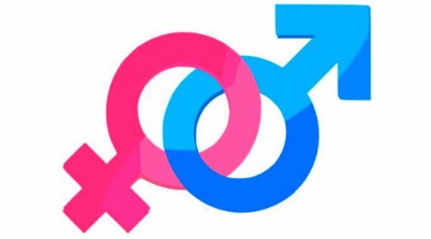

Aspectos Sociales
Planes
En 2008 se dio a conocer el Plan Nacional de Desarrollo Humano (PNDH), constituye el instrumento rector de la gestión pública, contiene políticas, estrategias y acciones transformadoras que ratifican la ruta de crecimiento económico y la defensa y restitución de los derechos de las familias nicaragüenses
Los principios del nuevo modelo son los siguientes:
Bienes y servicios Públicos y Privados: El Gobierno garantiza la gratuidad de la salud y educación primaria y secundaria, asegurando la alfabetización así como las otras necesidades básicas de la población, contribuyendo así a la restauración de sus derechos como ciudadanos. La reactivación de los servicios de agua y saneamiento, con un concepto de equidad en la distribución de los servicios básicos, hacen énfasis en los sectores más desposeídos del país así como la asignación de subsidios en los servicios de agua, electricidad y transporte público de Managua en beneficio de las familias de menores ingresos.
Estado proactivo que restaura los derechos de los ciudadanos con el Poder Ciudadano:
Con la creación de las instancias de participación y toma de decisiones por parte del pueblo a través de los Consejos y Gabinetes del Poder Ciudadano, el gobierno reivindica su derecho a decidir e incidir sobre sus necesidades y prioridades con la inclusión de las mismas en los planes, programas y proyectos del nuevo gobierno.
Equidad de Género y Derechos de Niñez y Juventud.

La pobreza en Nicaragua está arraigada en los grupos más vulnerados del país y la niñez, los jóvenes y las mujeres han sido los sectores de la población que durante los anteriores 16 años de Gobiernos Neoliberales se han visto altamente excluidos y violentados en sus derechos humanos más esenciales.
El Gobierno de Reconciliación y Unidad Nacional valora y promueve la participación de las mujeres como sujetos impulsores de cambios y generadoras de desarrollo. Esto implica la participación real y efectiva de las mujeres como actoras directas y conlleva a una transformación de relaciones y estilos de vida con el fomento y la promoción de nuevos valores que reivindiquen los derechos de todas las mujeres. Por tanto, es de suma importancia incentivar y promover la participación de las mujeres en todos los procesos de desarrollo político, económico y social en el país, generados por las instituciones del Estado y la sociedad civil en general, así como promover y visibilizar el liderazgo de las mujeres en todos los ámbitos de la Vida.
La Política de Género del Gobierno de Reconciliación y Unidad Nacional parte de las siguientes premisas: las mujeres como sujetos de cambios sociales y del desarrollo, el acceso a los bienes y medios productivos, equidad en la participación e igualdad de derechos y oportunidades, la inversión en áreas sensibles como educación, salud, vivienda, etc., la preeminencia de las mujeres pobres como mayoría, la organización y la participación social como medio para lograr el desarrollo.
Restitución de los Derechos Sociales, Económicos, Políticos y Culturales

El Gobierno de Reconciliación y Unidad Nacional se propone terminar con la discriminación, la exclusión y la marginación que por 16 años ha impedido a las familias nicaragüenses el ejercicio pleno y universal de sus derechos económicos, sociales, culturales y ambientales, como el acceso a crédito, acceso a proyectos de cooperación externa, la salud, la protección del medio ambiente, la educación, protección social, desarrollo cultural y expresiones artísticas, así como el acceso al empleo.